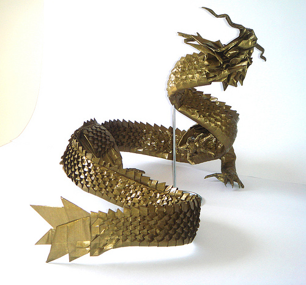
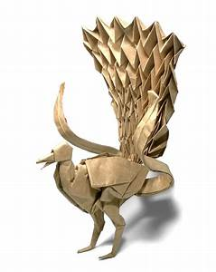
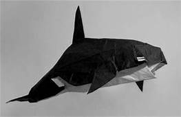

Satoshi Kamiya Japanese origami master Satoshi Kamiya is a Japanese origami artist. Known internationally to be a master of the craft, he began folding at age two. Kamiya began de... en.wikipedia.org Born: June 6, 1981 (age 39), Nagoya and he is my favourite one
  